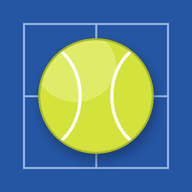

Last updated: September 28, 2026
Cosmo Sports is a free sports card game. You need a free account to play. Accounts use passkeys: we never ask for or store your email address or a password. It has no ads and no tracking or analytics. We don't sell or share personal information, and we collect only what a feature needs to work, described below.
Your settings (such as sounds and the odds format) are stored in the app on your device, and saved with your account when you're signed in. You can erase this device's copy at any time in Settings > Your data > Reset, or by removing the app.
Cosmo Sports no longer sends notifications. Earlier versions could send score alerts: the push addresses and alert choices kept for them are deleted from our live service, and nothing new is collected.
Cosmo Sports accounts sign in with a passkey, and you need one to use the app and to collect cards. Your device keeps the passkey's private key and unlocks it with Face ID, your fingerprint or your passcode; your face, fingerprint and passcode never leave your device and we never see them. We store only the passkey's public key, which can check a sign-in but can't be used to make one. When you're signed in, your settings are saved with your account so they follow you to other devices. Signing out removes your account from that device; your account stays saved. Deleting your account (Settings, then Account) erases it and everything saved with it.
When you create an account, our live service stores the display name you choose, your Cosmic Coin balance, your bets, the cards you collect and the games you play. Your name, balance, betting record, cards, game rating and record, market listings and the lineups and results of your games can appear on the public leaderboards, market and feed. This device also keeps a sign-in key for your account; anyone with it could use your account, so keep your device secure. Signing out cancels this device's key, and "Sign out everywhere" in Cosmic cancels every one. Cosmic Coins are play money: they can't be bought with real money or cashed out, and cards can only be traded for coins inside Cosmic. Neither has any cash value.
You can download a copy of everything saved for your Cosmic account at any time ("Download my data" at the bottom of Cosmic). It includes your name, coins, cards, bets, trophies and synced settings, but not your sign-in keys.
To protect against loss, our live service makes a backup of the Cosmic records it keeps (accounts, cards, games, the market and trades) once a day, stored with Cloudflare, the same provider that runs the service. Daily backups are deleted after 14 days and weekly ones after 90 days. If you delete your account, it's erased from the live service at once and disappears from backups as they expire, within 90 days at most; backups are only used to restore the service after a problem, never to bring back a deleted account.
If you use the form on the Support page, we store your message, the contact details you choose to give (for example an email address) and, if you're signed in, your account name, so we can reply. We keep support messages for up to 180 days and then delete them automatically, or sooner once they're handled. They're deleted when you delete your account.
If you report a player's name in Cosmic, we store the report (your account, the name and the reason you give) so the site's owner can review it. Reports you made, and reports about you, are deleted when you delete your account.
When you share a card or an invite, the link contains only the card or your public display name. Sharing is always started by you.
The app is hosted on GitHub Pages. These services receive standard technical information when your device contacts them (such as your IP address) and handle it under their own privacy policies:
Cosmo Sports (a play-money betting and card game) is for people 18 and over, who confirm their age when they create an account. It isn't directed to children, and we don't knowingly collect information from anyone under 18. If you believe someone under 18 has created an account, contact us through the Support page and we'll delete it.
If this policy changes, the new version will be posted here with a new date.
Questions about this policy, or a request about your data: use the form on the Support page. You can delete your account and everything saved with it yourself, at any time, in Settings.